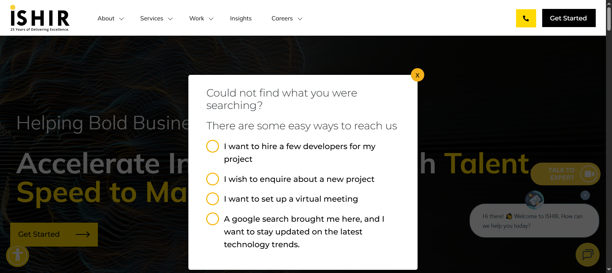

Started
Oct 10, 2025 01:52:55 PM
Ended
Oct 10, 2025 02:04:09 PM
Features Passed
2
Features Failed
5
Features
Scenarios
Steps
Timeline
Tags
| Name | Passed | Failed | Skipped | Others | Passed % |
|---|---|---|---|---|---|
| @NewsPage | 0 | 2 | 0 | 0 | 0% |
| @StaffingPage | 2 | 1 | 0 | 0 | 66.667% |
| @InsightPage | 2 | 0 | 0 | 0 | 100% |
| @TeamsPage | 0 | 2 | 0 | 0 | 0% |
| @AboutPage | 1 | 2 | 0 | 0 | 33.333% |
| @SuccessStories | 2 | 0 | 0 | 0 | 100% |
| @ClientsPage | 1 | 2 | 0 | 0 | 33.333% |
System/Environment
| Name | Value |
|---|---|
| AppName | Ishir.com |
| user | admin |
| build | v1.01 |
-
About Page Navigation
1:52:57 PM / 00:01:43:118 Fail
About Page Navigation
10.10.2025 1:52:57 PM 10.10.2025 1:54:40 PM 00:01:43:118 · #test-id=1As a user, I want to navigate through the About page to access information and forms.PassNavigate to Our Story pageGiven the user is on the Home pageWhen the user opens the About dropdownAnd selects the Our Story optionThen the Our Story page should appearFailNavigate to Get in Touch from Banner under Our Story pageGiven the user is on the Our Story pageWhen the user clicks the Get Started button under bannerThen the Get in Touch form should appearStep skippedcom.ishir.hooksmanager.ApplicationHooks.tearDown(io.cucumber.java.Scenario)Navigate_to_Get_in_Touch_from_Banner_under_Our_Story_pageFailNavigate to Get in Touch from How We Engage under Our Story pageGiven the user is on the Our Story pageWhen the user clicks the Get Started button under How We EngageThen the Get in Touch form should appearStep skippedcom.ishir.hooksmanager.ApplicationHooks.tearDown(io.cucumber.java.Scenario) -
Clients Page Navigation
1:54:40 PM / 00:02:26:475 Fail
Clients Page Navigation
10.10.2025 1:54:40 PM 10.10.2025 1:57:06 PM 00:02:26:475 · #test-id=30As a user, I want to navigate through the Clients page to access information and formsPassNavigate to Clients pageGiven the user is on the Home pageWhen the user opens the Work dropdownAnd selects the Clients optionThen Clients page should appearFailNavigate to Get in Touch from Clients page using clients sectionGiven the user is on the clients pageWhen the user clicks start your innovation journey buttonThen the Get in Touch form should appearStep skippedcom.ishir.hooksmanager.ApplicationHooks.tearDown(io.cucumber.java.Scenario)Navigate_to_Get_in_Touch_from_Clients_page_using_clients_sectionFailNavigate to Get in Touch from Clients page using Let's talk linkGiven the user is on the clients pageWhen the user clicks Let's talk linkThen the Get in Touch form should appearStep skippedcom.ishir.hooksmanager.ApplicationHooks.tearDown(io.cucumber.java.Scenario)Navigate_to_Get_in_Touch_from_Clients_page_using_Let's_talk_link -
About SuccessStories page Navigation
1:57:06 PM / 00:01:42:219 Pass
About SuccessStories page Navigation
10.10.2025 1:57:06 PM 10.10.2025 1:58:48 PM 00:01:42:219 · #test-id=59As a user, I want to navigate through the Insight page to access information and forms.PassNavigate to Insight pageGiven the user is on the Home pageWhen the user clicks the Insight optionThen Insight page should appearPassNavigate to Get in Touch from Insight pageGiven the user is on the Insight pageWhen the user clicks the Read More linkAnd user clicks Get Started button over Insight detailThen the Get in Touch form should appear -
News Page Navigation
1:58:48 PM / 00:00:43:908 Fail
News Page Navigation
10.10.2025 1:58:48 PM 10.10.2025 1:59:32 PM 00:00:43:908 · #test-id=79As a user, I want to navigate through the News page to access information and forms.FailNavigate to News pageGiven the user is on the Home pageWhen the user opens the About dropdownAnd selects the News optionStep skippedThen News page should appearStep skippedcom.ishir.hooksmanager.ApplicationHooks.tearDown(io.cucumber.java.Scenario)FailNavigate to Get in Touch from News main pageGiven the user is on the News pageWhen the user clicks the Stay Updated button on News PageThen the Get in Touch form should appearStep skippedcom.ishir.hooksmanager.ApplicationHooks.tearDown(io.cucumber.java.Scenario) -
Staffing Page Navigation
1:59:32 PM / 00:02:05:091 Fail
Staffing Page Navigation
10.10.2025 1:59:32 PM 10.10.2025 2:01:37 PM 00:02:05:091 · #test-id=99As a user, I want to navigate through the Staffing Page to access different forms.PassNavigate to Staffing MenuGiven the user is on the Home pageWhen the user clicks the Services MenuAnd click Staffing Menu optionThen Staffing page should appearPassNavigate to Get in Touch via main banner on Staffing pageGiven the user is on the Staffing pageWhen the user clicks main Get Started buttonThen the Get in Touch form should appearFailNavigate to Get in Touch via bottom banner on Staffing pageGiven the user is on the Staffing pageWhen the user clicks bottom Get Started buttonThen the Get in Touch form should appearStep skippedcom.ishir.hooksmanager.ApplicationHooks.tearDown(io.cucumber.java.Scenario) -
About SuccessStories page Navigation
2:01:37 PM / 00:01:17:105 Pass
About SuccessStories page Navigation
10.10.2025 2:01:37 PM 10.10.2025 2:02:55 PM 00:01:17:105 · #test-id=128As a user, I want to navigate through the Success Stories page to access information and forms.PassNavigate to Success Stories pageGiven the user is on the Home pageWhen the user opens the Work dropdownAnd selects the Success Stories optionThen the Success Stories page should appearPassNavigate to Get in Touch from Success Stories pageGiven the user is on the Success Stories pageWhen the user clicks the available view case studyAnd clicks Contact US Today over case studyThen the Get in Touch form should appear -
Teams Page Navigation
2:02:55 PM / 00:01:14:110 Fail
Teams Page Navigation
10.10.2025 2:02:55 PM 10.10.2025 2:04:09 PM 00:01:14:110 · #test-id=149As a user, I want to navigate through the Teams page to access information and forms.FailNavigate to Teams pageGiven the user is on the Home pageWhen the user opens the About dropdownAnd selects the Team optionThen Team page should appearStep skippedcom.ishir.hooksmanager.ApplicationHooks.tearDown(io.cucumber.java.Scenario)Navigate_to_Teams_pageFailNavigate to Get in Touch from Our Teams pageGiven the user is on the Our Story pageWhen the user clicks the Get Started button on Teams PageThen the Get in Touch form should appearStep skippedcom.ishir.hooksmanager.ApplicationHooks.tearDown(io.cucumber.java.Scenario)Navigate_to_Get_in_Touch_from_Our_Teams_page
-
org.openqa.selenium.ElementNotInteractableException
1 tests
org.openqa.selenium.ElementNotInteractableException
1 failedStatus Timestamp TestName Fail 13:53:45 PM When the user clicks the Get Started button under banner About Page Navigation.Navigate to Get in Touch from Banner under Our Story page.When the user clicks the Get Started button under banner -
org.openqa.selenium.TimeoutException
4 tests
org.openqa.selenium.TimeoutException
4 failedStatus Timestamp TestName Fail 13:54:21 PM When the user clicks the Get Started button under How We Engage About Page Navigation.Navigate to Get in Touch from How We Engage under Our Story page.When the user clicks the Get Started button under How We EngageFail 13:58:52 PM When the user opens the About dropdown News Page Navigation.Navigate to News page.When the user opens the About dropdownFail 13:59:14 PM When the user clicks the Stay Updated button on News Page News Page Navigation.Navigate to Get in Touch from News main page.When the user clicks the Stay Updated button on News PageFail 14:01:13 PM When the user clicks bottom Get Started button Staffing Page Navigation.Navigate to Get in Touch via bottom banner on Staffing page.When the user clicks bottom Get Started button -
org.openqa.selenium.ElementClickInterceptedException
4 tests
org.openqa.selenium.ElementClickInterceptedException
4 failedStatus Timestamp TestName Fail 13:56:02 PM When the user clicks start your innovation journey button Clients Page Navigation.Navigate to Get in Touch from Clients page using clients section.When the user clicks start your innovation journey buttonFail 13:56:41 PM When the user clicks Let's talk link Clients Page Navigation.Navigate to Get in Touch from Clients page using Let's talk link.When the user clicks Let's talk linkFail 14:03:18 PM And selects the Team option Teams Page Navigation.Navigate to Teams page.And selects the Team optionFail 14:03:48 PM When the user clicks the Get Started button on Teams Page Teams Page Navigation.Navigate to Get in Touch from Our Teams page.When the user clicks the Get Started button on Teams Page -
org.openqa.selenium.NoSuchWindowException
4 tests
org.openqa.selenium.NoSuchWindowException
4 failedStatus Timestamp TestName Fail 13:54:29 PM com.ishir.hooksmanager.ApplicationHooks.tearDown(io.cucumber.java.Scenario) About Page Navigation.Navigate to Get in Touch from How We Engage under Our Story page.com.ishir.hooksmanager.ApplicationHooks.tearDown(io.cucumber.java.Scenario)Fail 13:59:00 PM com.ishir.hooksmanager.ApplicationHooks.tearDown(io.cucumber.java.Scenario) News Page Navigation.Navigate to News page.com.ishir.hooksmanager.ApplicationHooks.tearDown(io.cucumber.java.Scenario)Fail 13:59:22 PM com.ishir.hooksmanager.ApplicationHooks.tearDown(io.cucumber.java.Scenario) News Page Navigation.Navigate to Get in Touch from News main page.com.ishir.hooksmanager.ApplicationHooks.tearDown(io.cucumber.java.Scenario)Fail 14:01:27 PM com.ishir.hooksmanager.ApplicationHooks.tearDown(io.cucumber.java.Scenario) Staffing Page Navigation.Navigate to Get in Touch via bottom banner on Staffing page.com.ishir.hooksmanager.ApplicationHooks.tearDown(io.cucumber.java.Scenario)